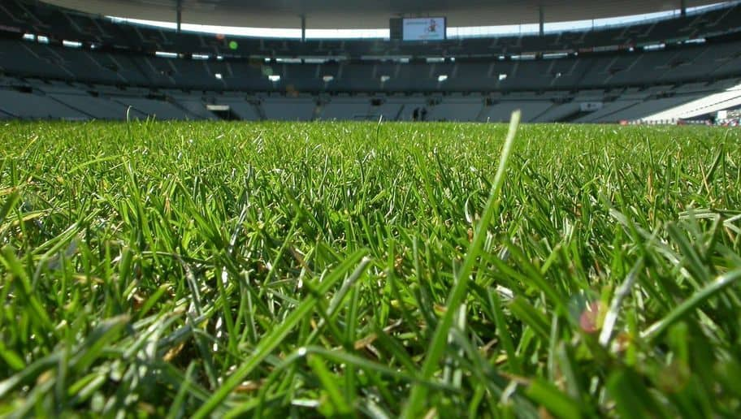
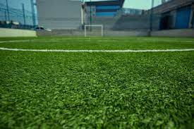
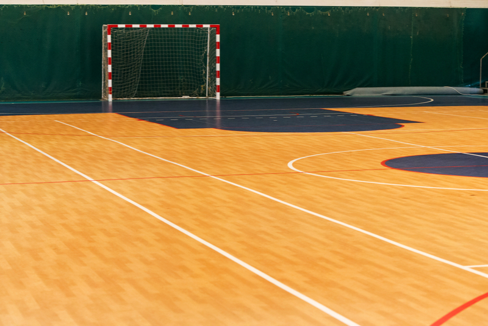

Campo de natural
Es el césped más utilizado en los campos de futbol profesionales, y el que más dominio de la pelota
requiere,
puesto que este tipo de superficie proporciona cambios de ritmo más variados. El césped natural
aún es la opción preferida por los jugadores.

Campo Sintetico
El césped artificial permite una conducción del balón limpia y un bote sin sorpresas, porque es más
uniforme y su desgaste es casi imperceptible. Este tipo de terreno absorbe mejor los impactos y permite
una
mayor
potencia de giro.

Campo Futsal
El fútbol 5 es un juego rápido y técnico, que requiere adherencia de los zapatos en el suelo para un
deslize rápido de la pelota y confort para proteger de las articulaciones y amortiguar las caídas.
Existen
diferentes tipos de suelo deportivo tales como, madera, resina, gripper, pavimento, etc. Lo ideal en
estos
terrenos es que la
suela sea plana y con adherencia al suelo.
